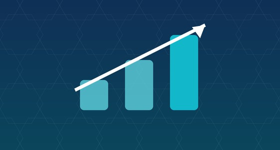

QualMed accompagne les entreprises dans leur mise en conformité, leur structuration et l'amélioration durable de leurs performances. De la création au développement, nous aidons les dirigeants à maîtriser les risques, fiabiliser les processus et renforcer la compétitivité.
Dispositifs médicaux, MDR, ISO 13485, import-export, audits et conformité.
Découvrir le pôle →
Diagnostic organisationnel, réorganisation, amélioration de la performance, management de transition, structuration des nouvelles entreprises.
Découvrir le pôle →ISO 9001, ISO 14001, ISO 45001, systèmes intégrés, audits, formation et accompagnement aux certifications.
Découvrir le pôle →Diagnostic de la situation et des besoins.
Analyse des risques et plan d'action.
Accompagnement opérationnel et mise en œuvre.
Suivi des résultats, audits et amélioration continue.
Échangeons sur vos enjeux et identifions les solutions adaptées à votre activité.